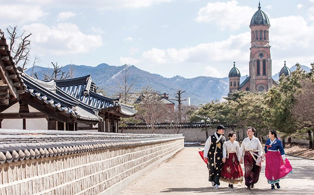
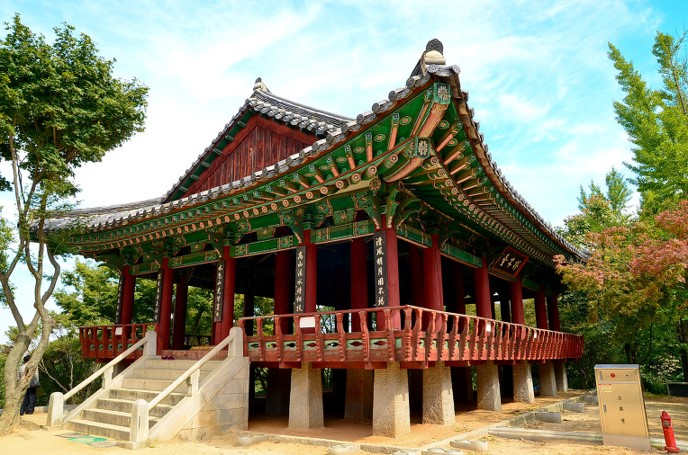
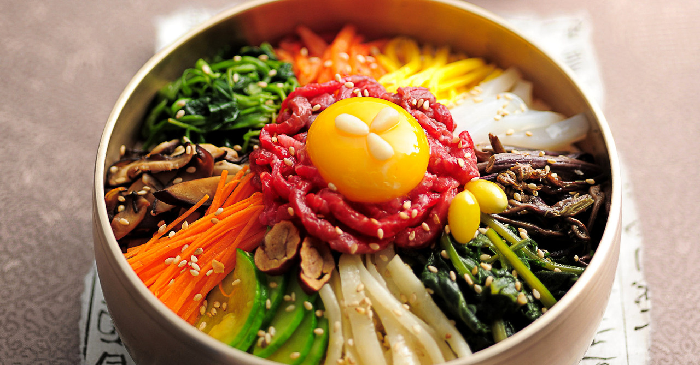
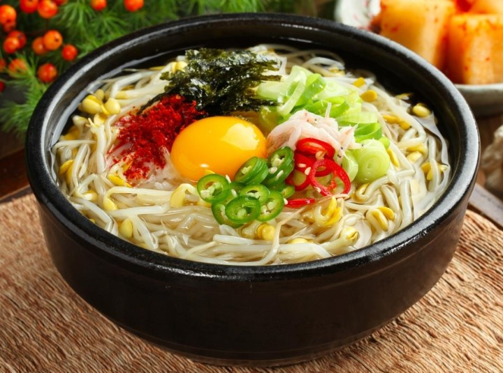
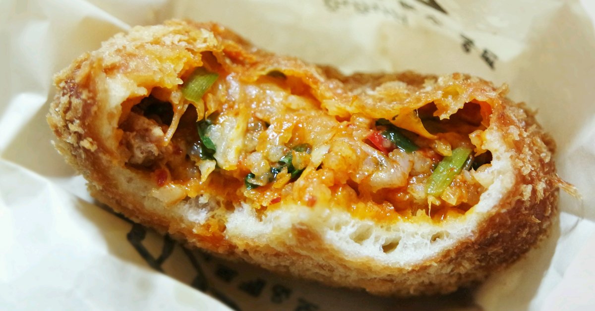

관광지
1. 한옥마을

전주는 후백제의 도읍이었으며, 조선 태조의 본향으로 왕조의 뿌리다.
또 한식과 한복, 한지 등 우리 문화의 참맛이 살아 있는 고장이다. 풍남동과 교동 일대 전주한옥마을은 그 중심이다.
일제강점기 일본 상인들에 대항해 조성한 한옥촌으로, 세월이 흘러 전주를 상징하는 마을로 자리매김했다.
태조의 어진을 모신 경기전, 천주교의 성지 전동성당, 한류 영화와 드라마의 촬영지 전주향교 등에서 우리
문화의 면면을 만날 수 있다. 한지 공예, 부채 만들기 등 다양한 전통 공예 체험도 가능하다. 근래 들어서는
'한복데이'가 생기며 한복 차림으로 한옥마을에 오가는 젊은이가 많다. 전통 공연 역시 각광받는다. 공연만
보는 게 아니라 식사나 체험 등을 결합해 한옥마을을 한층 풍성하게 누리도록 돕는다. 비빔밥, 오모가리탕,
콩나물국밥 등 먹거리도 빠질 수 없다. 전주한옥마을은 전통과 문화, 활기 넘치는 사람들의 슬로시티다.
2. 오목대

전라북도 전주시의 완산구 풍남동에 위치한 작은 언덕이다. 경기전에서 약 동남쪽으로 500여 미터
떨어진 곳에 위치한다. 언덕의 정상은 평평하고, 그 아래에는 전주천, 한옥 마을, 한벽루(寒碧樓), 전통문화센터 등이 있다.
정상은 1380년(고려 우왕 6)에 남원의 황산에서 왜구를 물리치고 돌아가던 이성계(李成桂, 1335~1408) 장군이 이곳에서
승전 잔치를 베푼 곳이다. 조선왕조를 개국하고 나서 여기에 정자를 짓고, 이름을 오목대(梧木臺)라 했다. 이곳에
오동나무가 많았기에 언덕의 이름을 오목대라는 설이 있다. 『여지도서』(전주)에 "발산 아래에 오목대가
평평하게 펼쳐 있다."고 기록되어 있다. 『완산지(完山誌)』에 "발산(鉢山) 아래에 있는 돈대이다. 평탄하게
펼쳐져 위에서 전주성을 아래로 굽어보고 있다."라는 기록이 있다. 정상에는 고종(高宗)의 친필인
태조고황제주필유지(太祖高皇帝駐畢遺址) 비문이 있다.
먹거리
1. 전주 비빔밥

2. 콩나물국밥

3. 고로케
